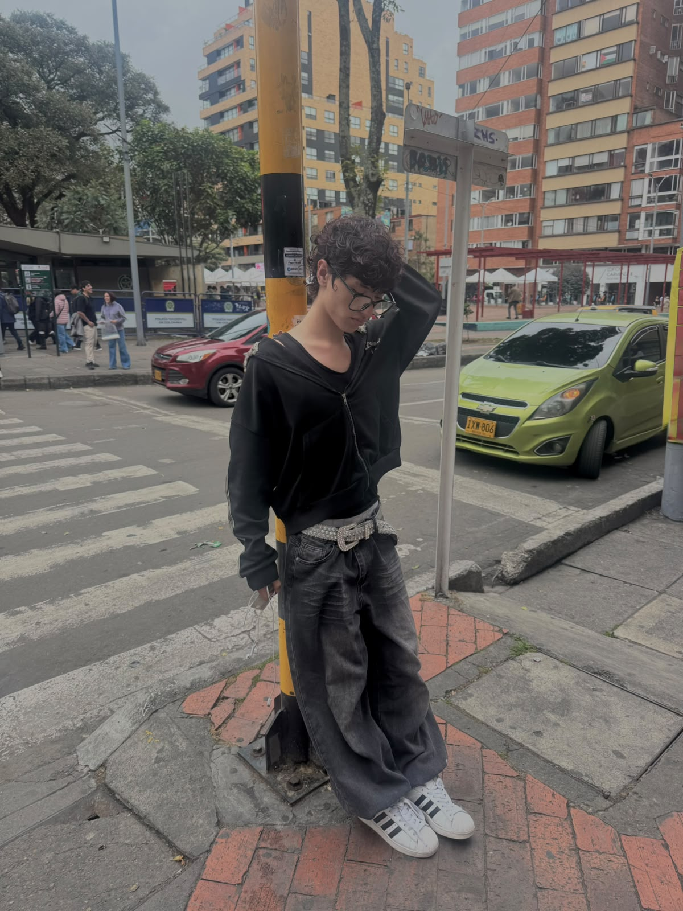
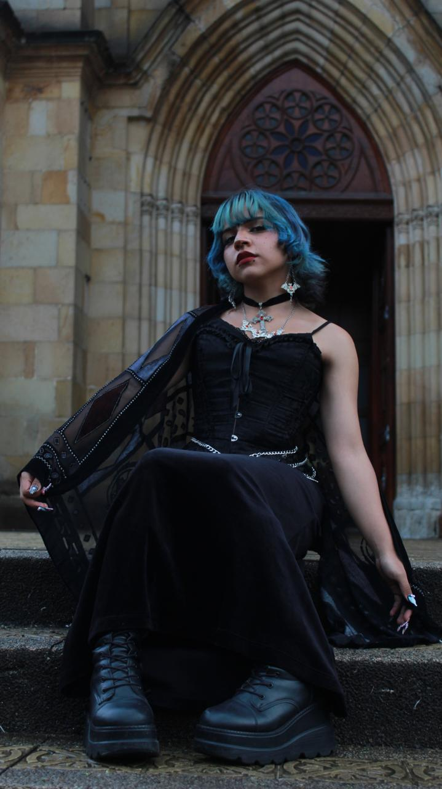
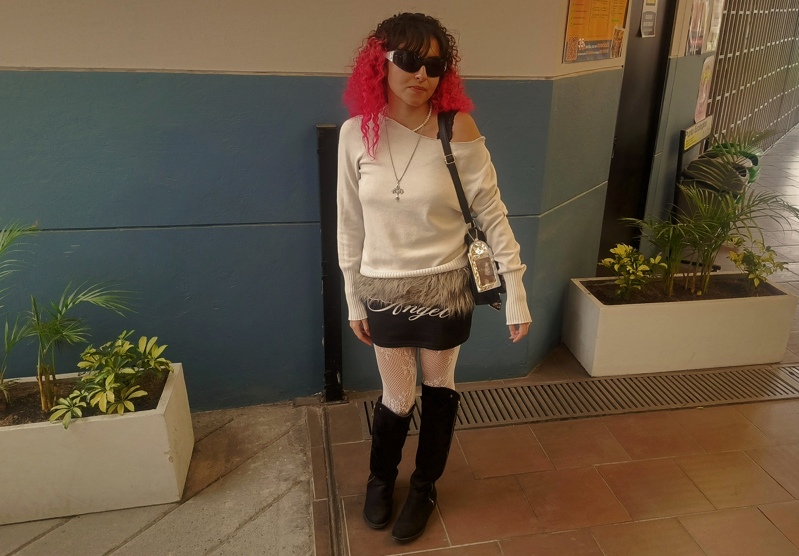

introducción de ensayo Plantear el problema y el contexto de Bogotá antes de mostrar la primera imagen.
MODA Y EXPRESIÓN
El asfalto como pasarela urbana
TEXTO ENSAYO ENFASIS CALLE

"Citar entrevista 1" — Nombre, Transeúnte en Chapinero.
Párrafo conectando la entrevista con el escrito

2. Identidad en los campus: La moda universitaria
Texto sobre cómo cambian los códigos de vestimenta dentro del espacio universitario.


Continuar el escrito


3. Moda y expresión en eventos
parte del escrito hablando sobre la oportunidad de moda en eventos


"Me encanta ser personajes que me identifican conmigo misma" — Juliana, cosplayer de Rogue en SOFA.
texto cosplays

Reflexiones finales del texto
conclusion.
Un interrogante por resolver
pregunta final !!